01.06.2023
4. Рулевое устройство
Эскизные чертежи пера руля с баллером и гельмпортом предоставило бюро Брюса Робертса. Верфь «Амета» несколько переработала этот узел. В итоге, перо было сварено из нержавейки, диаметр нержавеющего баллера был увеличен с 70 мм (по Брюсу) до 90 мм. Баллер опирается на пятку скега с бронзовым подшипником. В гельмпортовой трубе еще два подшипника. Кстати, в изначальном проекте скег и фальшкиль жестко соединялись стальной балкой (рисунок ниже), но от этого мы отказались.
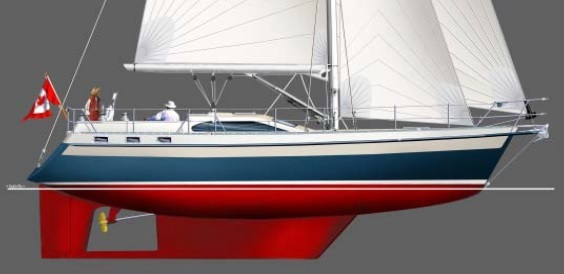
Монтаж гельмпорта, скега и установка баллера были сделаны вскоре после завершения сварки корпуса на верфи «Амета». До монтажа остальной части рулевого механизма нужно было отпескоструить и покрасить корпус. А до этого завершить весь палубный монтаж. Верх баллера долго сиротливо торчал в ахтерпике.
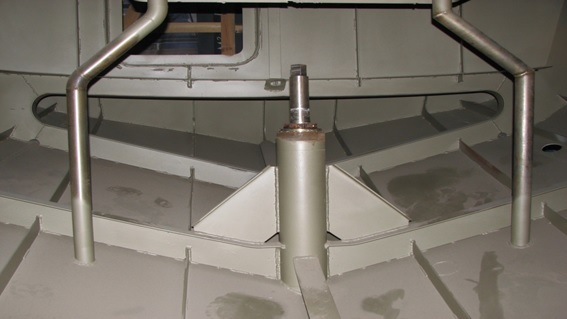
Процесс выбора, закупки и доставки недостающих частей растянулся на месяцы. На верфи посоветовали датскую фирму JEFA, которая как раз на этом и специализируется. Ей были переданы основные параметры лодки. Выбор конкретного механизма осуществила сама эта фирма.
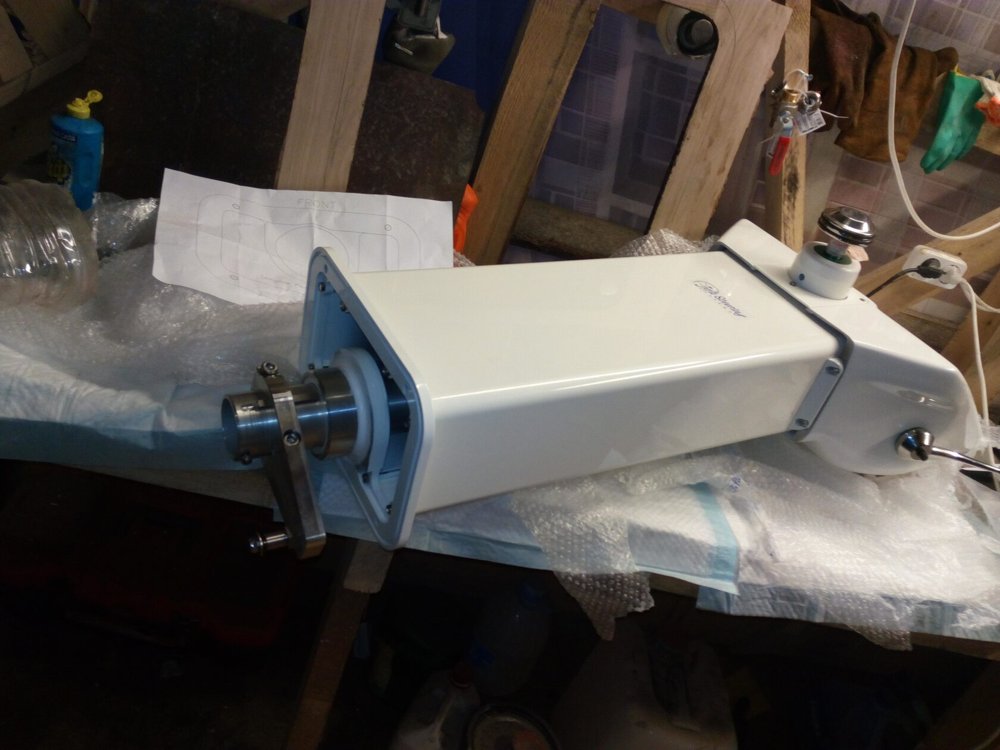

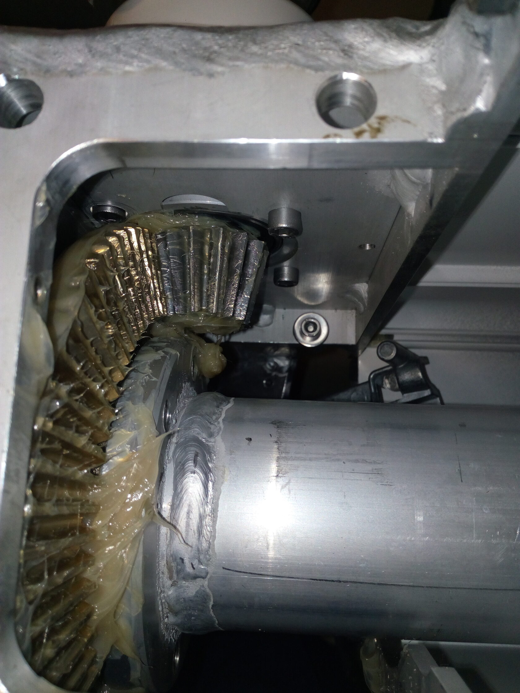
Но позднее, в процессе эксплуатации, всплыли серьезные вопросы к этой системе. Дело в том, что передача усилия на перо производится по схеме: штурвал – коническая передача – рычаг – тяга – рычаг - баллер. А в свежую погоду нагрузка на штурвал и, стало быть, на руки рулевого оказалась велика. Можно было бы сослаться на плохую физическую форму рулевого и избалованность гидравлическим приводом на предыдущей яхте, но такие значительные усилия отметили практически все, кто рулил на Эридане в 5-6 баллов. Вы закономерно спросите, почему выбор пал на механику? Отвечу одно – решили на практике проверить утверждение, что механика ломается меньше, чем все остальное. На Катти были и штуртроса и гидравлика, и проблемы с ними. Сейчас всерьез подумываю о переходе на гидравлику. Это ж сколько всего надо будет переделать!
Толщина металла в палубе кокпита 4 мм. Начали вырезать отверстие и поняли, что хиленькая конструкция, такая пластина может потерять устойчивость.
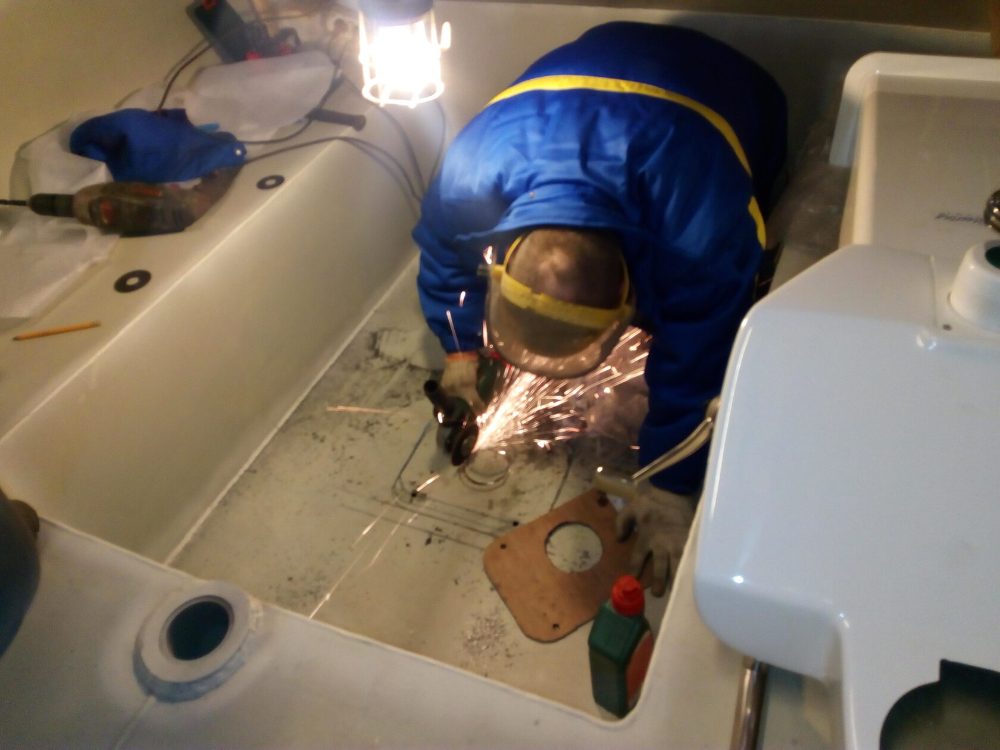
Решили приварить дополнительные ребра жесткости.
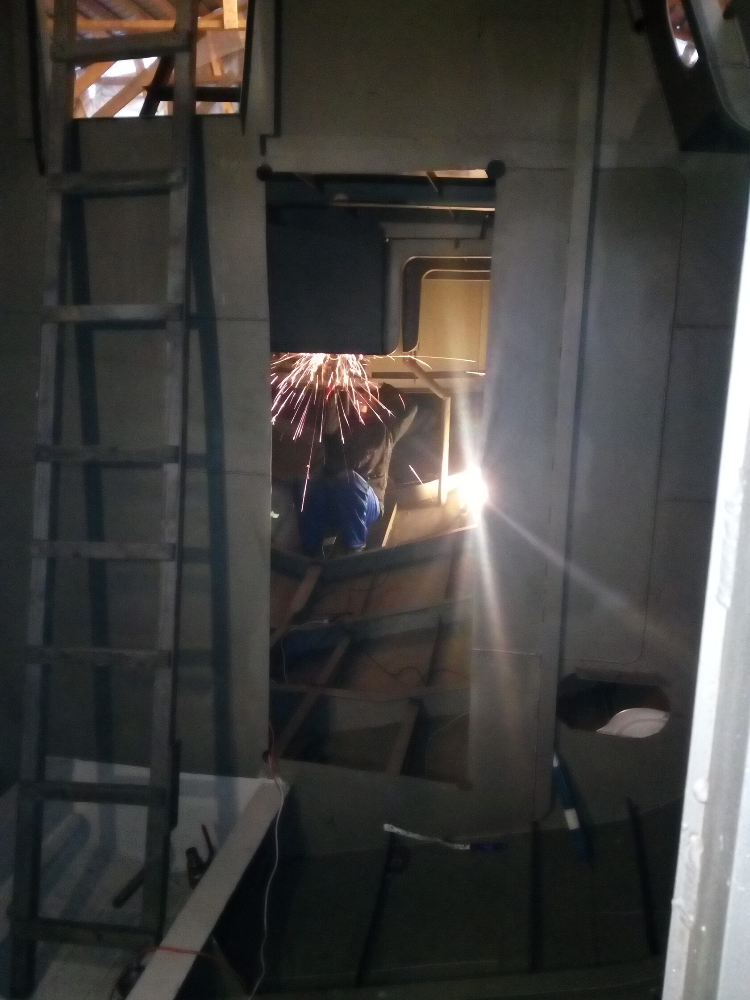
Сказано – сделано.
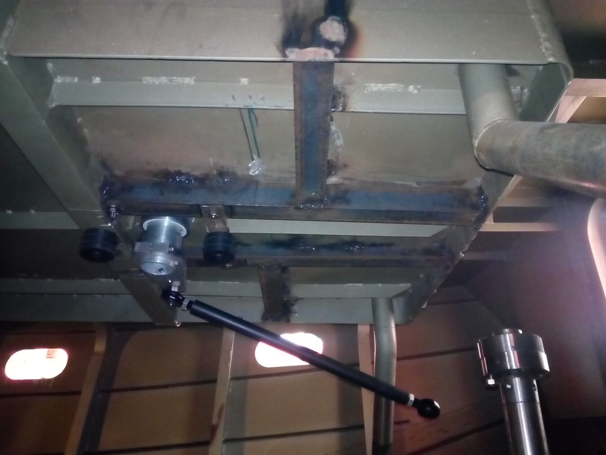
Эксплуатация рулевого проявила еще одну проблему. Баллер, имея три точки опоры и скольжения (две в гельмпорте и одна в пятке скега), имел еще и четвертую, самую верхнюю. Это проход оголовка баллера через палубу для присоединения аварийного румпеля. Это отверстие получилось не совсем соосным. Пришлось выдумывать, как, сохранив общее соединение, победить несоосность.
Ниже фото с установленным на баллер румпелем и тягой, соединяющейся с меньшим по длине румпелем, закрепленным на трубе, выходящей из пьедестала.
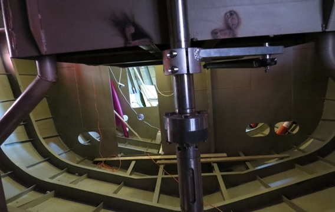
Пьедестал – важная составляющая рулевого механизма. Это станина для штурвала, конической передачи и толстостенной алюминиевой трубы, на которую передается вращательный момент. Этот же пьедестал служит для размещения приборов для судоводителя (компас, плоттер, эхолот, датчик положения руля, управление подруливающим устройством, ветроуказатель и т.д.).
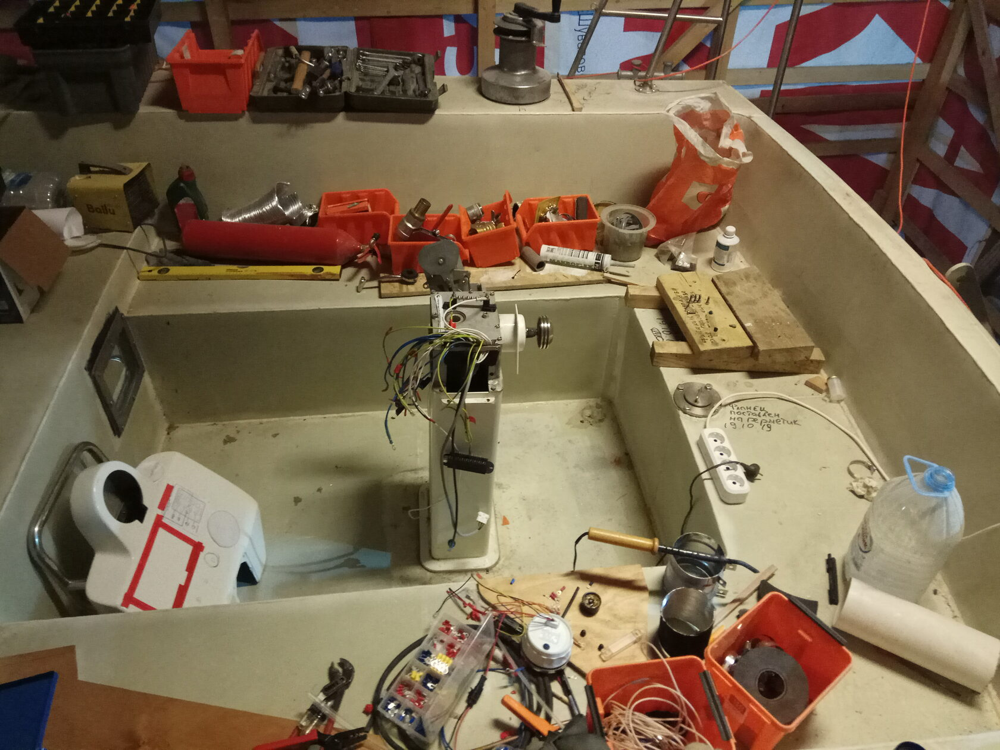
На нем же расположена ручка дистанционного управления двигателем.
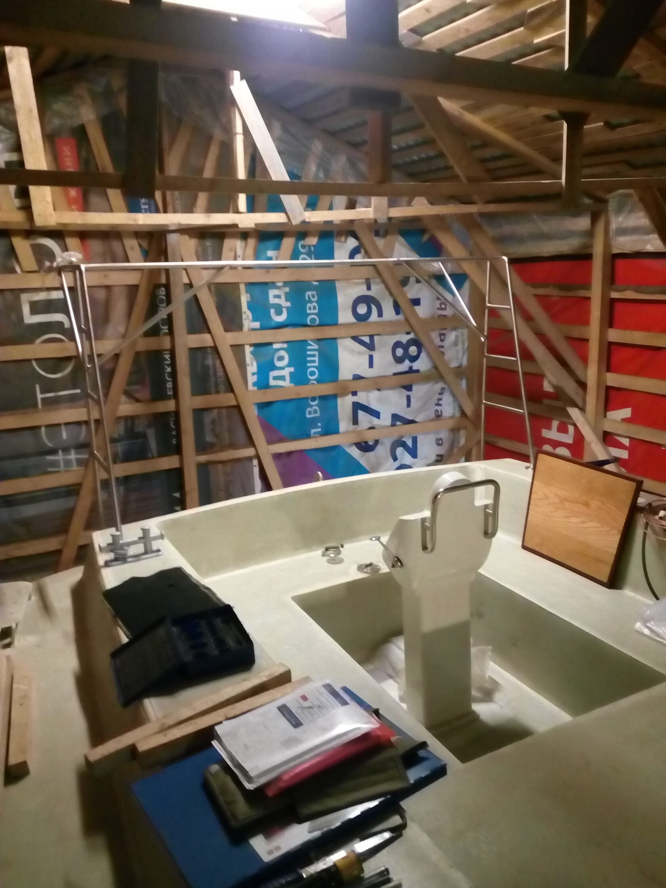
Алюминиевый пьедестал крепился к основанию кокпита сквозными шпильками, сажался на герметик. Пьедестал, как основной информационный портал для судоводителя получился напичканным кабелями и разъемами.
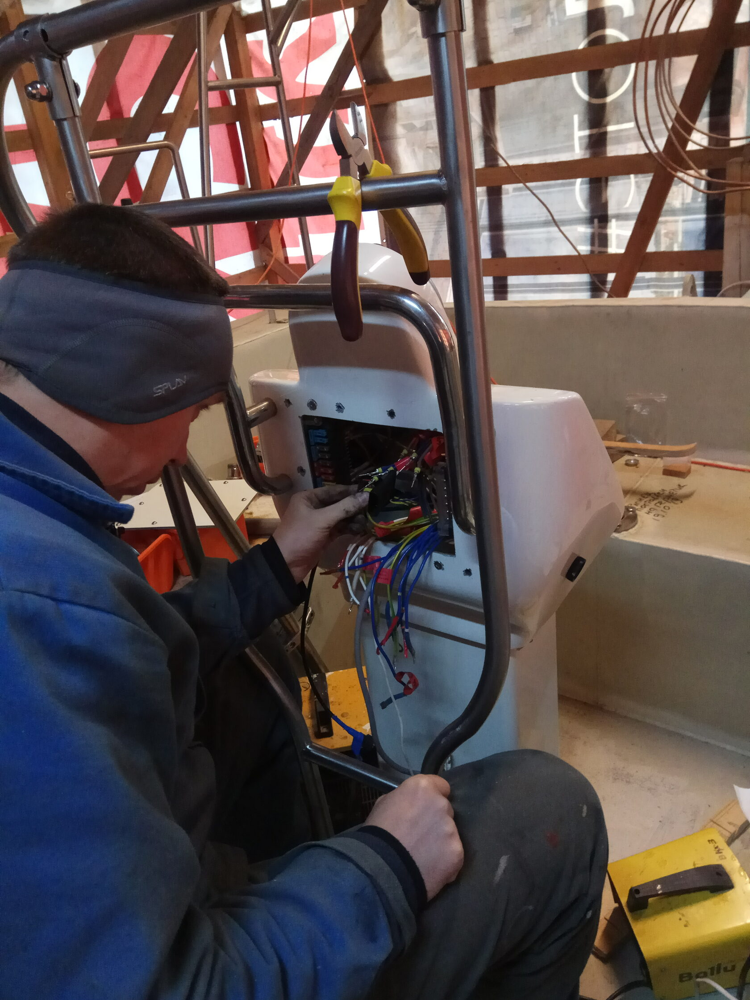
Здесь же механизм и тяги дистанционного управления двигателем. Выбор самого большого по размерам и объему пьедестала во всей линейке, предлагаемых фирмой JEFA, себя оправдал.
На фото ниже готовимся вырезать отверстие под эхолот.
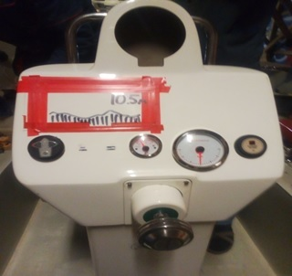
Прочность конструкции вызывала у нас сомнения с самого начала. Стандартная проектная авария, то есть прилет в болтанку (качку) на пьедестал или штурвал живого или полумертвого тела пусть и мягкого, но весом в 80 - 100 кг, побудила нас придумать и реализовать специальную защиту из стальных труб.
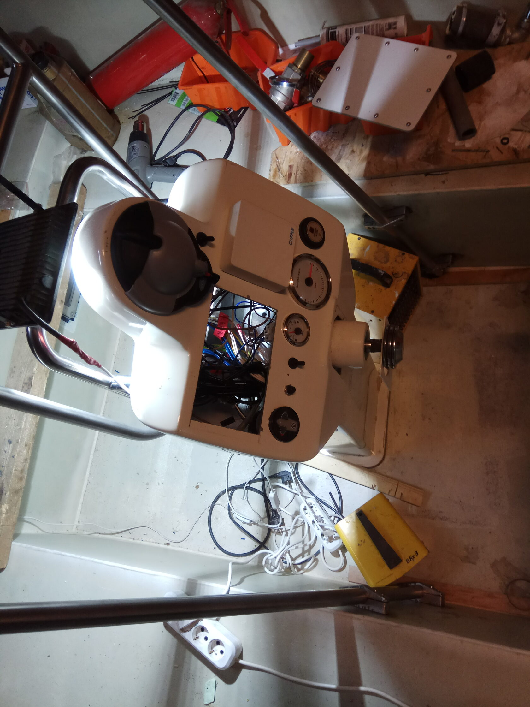
Практика показала необходимость и удобство конструкции релинга.